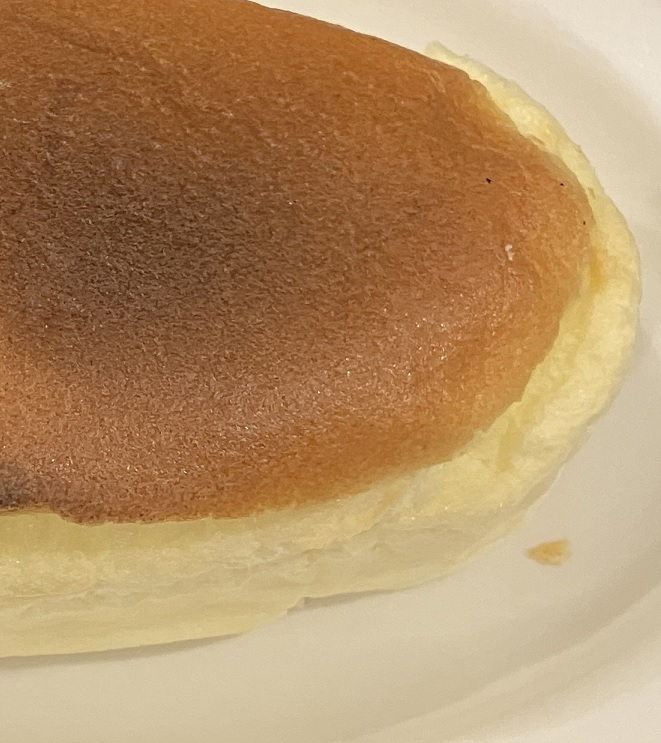

日式轻乳酪蛋糕 ★ Japanese Light Cheesecake
 6 servings
6 servings 3 hours 30 minutes
3 hours 30 minutes-
 yolocitrus
yolocitrus
 Meat
Meat Sweet
Sweet
轻盈绵密的日式乳酪蛋糕，入口即化

- 3 个 鸡蛋
- 60g 牛奶/豆奶
- 160g 奶油奶酪(cream cheese)
- 35g 无盐黄油
- 25g 低筋面粉
- 40g 白糖
准备鸡蛋（无需回温），牛奶/豆奶，奶油奶酪(cream cheese)（直接从冰箱取出），无盐黄油（直接从冰箱取出），低筋面粉，白糖。
- -—–
分离蛋黄和蛋白。将蛋清放回冰箱冷藏。
- -—–
烤盘不宜太深。使用烘焙纸，松散地贴在烤盘侧面，且纸要裁得比烤盘高，因为蛋糕会膨胀。
- 60g 牛奶/豆奶
- 160g 奶油奶酪(cream cheese)
- 35g 无盐黄油
烧一锅水至开始冒泡后转小火。锅上放个盆，将牛奶/豆奶、奶油奶酪(cream cheese)和无盐黄油放入，一边搅拌（搅拌棒），一边用小火慢慢融化至顺滑，然后关火。
- 25g 低筋面粉
用余热完成下面操作：加入蛋黄，搅拌约一分钟。快速筛入低筋面粉，搅拌均匀。动作迅速，避免蛋黄被煮熟。
- -—–
打发蛋白：将蛋清从冰箱取出，加入少许白醋/柠檬水。
- 40g 白糖
使用打蛋器（例如从4档开始），起泡后分几次加入白糖。糖全部加入后，将速度降低（例如降至3档），以制作出细腻的蛋白霜。打发程度：需打发至湿性发泡（soft peaks）状态（例如总共用时6分钟）。
- -—–
将蛋白霜分三次加入蛋黄糊中，翻拌法搅拌，轻轻混合。由于蛋黄糊和蛋白霜的浓稠度一致，因此很容易混合。
- -—–
将面糊慢慢倒入蛋糕烤盘，无需震动烤盘排气，只需抹平表面，气泡会在低温烘烤中自行排出。
- -—–
余热烤箱，同时将步骤2剩下的水继续加热后倒入底部烤盘（托住蛋糕烤盘的）。
- -—–
将蛋糕糊放入烤箱，以120°C (250°F)烘烤60分钟。
- -—–
60分钟后，蛋糕高度约增加一倍，此时蛋糕已熟。打开烤箱顶部的加热元件（broiler）给蛋糕上色，使表面均匀光滑不裂开。
- -—–
拿出蛋糕。当烤盘不烫时取出蛋糕。刚出炉时，由于芝士和黄油仍是液体，蛋糕会非常柔软且晃动。
- -—–
冷却后放入冰箱，冷藏2到3小时，或隔夜。待芝士和黄油凝固后，口感更佳。